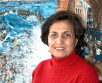

Shammout.com
I s m a i l
Biography
Selected Paintings
 1950-1959 1950-1959
1960-1969
1970-1979
1980-1989
1990-1999
Sketches
Computer
Graphics
Exhibitions
T a m a m
Biography
Selected
Paintings
Sketches
Exhibitions
G
u e s t b o o k
Guestbook
View all entries
C o n t a c t us
Shammout
O t h e r
R e l a t e d
T o p i c s
Art
in Palestine
What's new
|
Tamam Al-Akhal
|
b
i o g r a p h y . . .
|
|
Tamam
Aref Al-Akhal
| 1935 |
Born in the city
of Jaffa, Palestine. |
| 1948 |
Forced to abandon
her birthplace and take refuge in
a refugee camp in Beirut,
Lebanon. |
| 1949 |
Pursued her
studies at Al-Makased Girls
School in Beirut
Participated with her early works
in various exhibitions in Beirut. |
|
 |
| 1953
|
Enrolled in the
Higher Institute of Fine Arts in Cairo. |
| 1954 |
Took part in the
exhibition of her colleague Ismail
Shammout in Cairo, sponsored and
inaugurated by President Jamal
Abdul-Nasser. |
| 1957 |
A Teacher of Art
at Al-Makased Girls School in Beirut. |
| 1959 |
Married her
artist colleague Ismail Shammout, shared
with him the Exhibitions held in various
countries of the world. |
| 1983 |
Moved from Beirut
to Kuwait with her family, following the
Israeli aggression against the PLO in
Lebanon. |
| 1992 |
Moved to Cologne,
Germany, with her family following the
Gulf war. |
| 1994 |
Engaged full-time
in art and is resides with her husband in
Amman. |
|
|